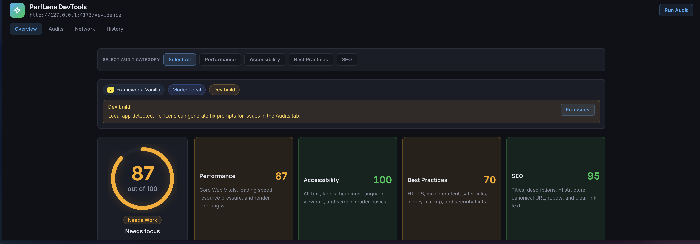
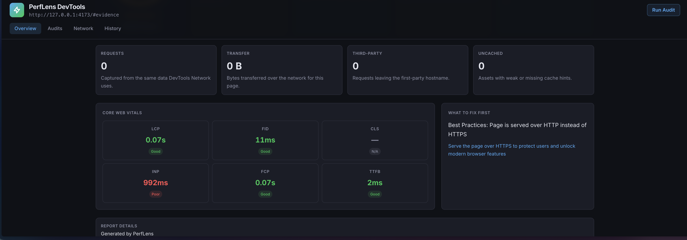
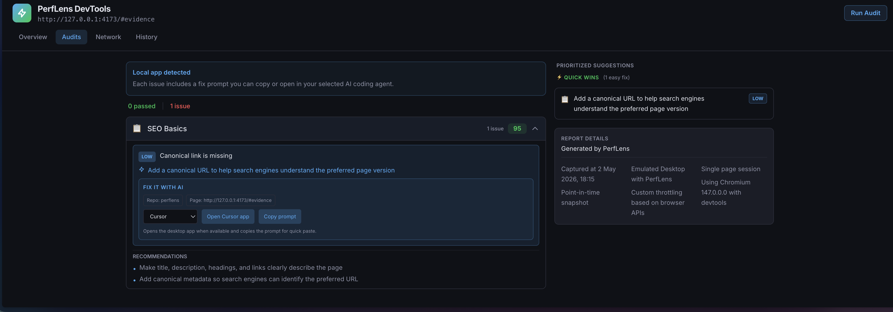
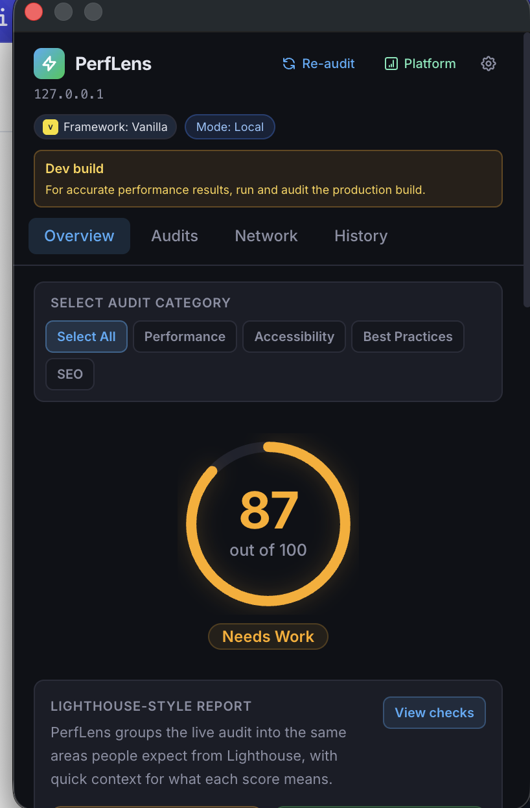

Track LCP, FID, CLS, INP, FCP, and TTFB directly from the page you are testing.
Browser-first performance auditor
PerfLens sees what slows real product launches.
Audit Core Web Vitals, resources, accessibility signals, framework context, history, and launch evidence without leaving the browser flow.
0-100
Lighthouse-style Web Vitals score with live page context.
Local
Metrics stay in browser storage during normal extension use.
Evidence
Screenshots, videos, JSON reports, and launch readiness status.
Everything a launch review needs in one browser-native lens.
PerfLens combines live measurement with product-focused diagnosis, so teams can move from vague performance anxiety to a short list of fixes.
See oversized images, large bundles, blocking CSS, weak caching, compression gaps, and heavy third-party code.
Blend desktop and mobile audit results into a readiness status that is easier to share before release.
Store local score history, trend indicators, and JSON exports so regressions are easier to spot.
Summarize the likely bottlenecks behind a score instead of forcing every teammate through raw metrics.
Rank recommendations by impact, effort, and confidence so the next engineering step is obvious.
Designed for the messy middle between a score and a shipped fix.
PerfLens is useful during development, client QA, portfolio polish, and final production checks.
Run audits in the same browser context where you are testing actual pages and interactions.
Review Web Vitals, resource weight, framework detection, build mode, and accessibility checks.
Generate desktop and mobile audit artifacts with screenshots, video, JSON, and status summaries.
Use ranked issues and root cause notes to pick the fastest path to a better user experience.
Better than Lighthouse when the job is product work.
Lighthouse is excellent for standardized lab audits. PerfLens adds the workflow layer teams need when they are debugging live pages and preparing to launch.
Lighthouse gives you a strong audit baseline
- Great one-time lab scoring for performance, accessibility, SEO, and best practices.
- Useful diagnostics, but reports often need interpretation before the team knows what to do.
- Less focused on ongoing history, browser-extension context, launch evidence packs, and fix prioritization.
PerfLens helps you act faster
- Lives in the browser and monitors pages as you browse, making performance feedback part of daily development.
- Tracks per-URL history, framework/build signals, resource-specific issues, and local exports.
- Produces prioritized suggestions, root cause stories, screenshots, videos, JSON reports, and launch readiness status.
Real extension snapshots, not imaginary dashboard art.
The landing page now shows actual PerfLens output: DevTools reports, Web Vitals, prioritized audit issues, Fix It with AI prompts, and the Chrome extension popup.




Evidence that survives the meeting.
PerfLens turns a browser check into artifacts your team can review later: screenshots, recordings, category scores, resources, prioritized issues, and JSON reports for offline analysis or CI workflows.
Desktop audit screenshot
PNG
Mobile audit screenshot
PNG
Launch review recording
WEBM
Offline performance report
JSON
Ship faster pages with clearer evidence.
PerfLens keeps performance close to the product, close to the browser, and close to the next fix.